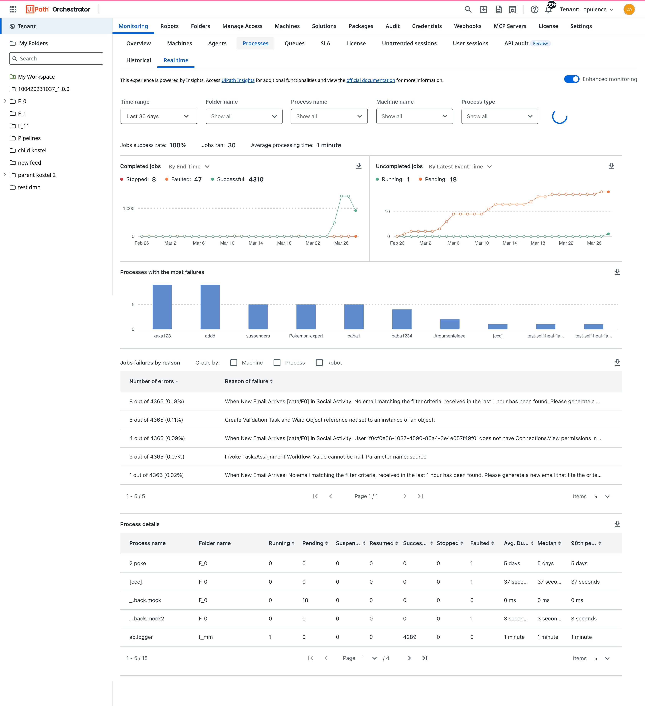

Me
Hi! I'm Dana, a human product designer. This is a space where I share |
Why I design
I want to help build things that work - functional, seamless, intuitive. Enterprise software users deserve
nice things too.
Designing for enterprise
Always aiming to balance complex product requirements, cross-functional collaboration, diverse user needs and
ensure scalability across large organizational ecosystems.
The road ahead
Striving for impact by designing thoughtful solutions that truly improve lives, while leveraging AI to handle
everything else.
Monitoring dashboards
Challenge: Consolidating key data into a single, readable interface that enables users to track, interpret
and act on trends quickly.
User problems:
I can't tell which metrics need my attention without digging through multiple views.
The dashboard is cluttered, making it hard to find what I need quickly.
I don't get timely alerts when something goes wrong or deviates from normal behavior.
Business problems:
Missed incidents or performance issues due to ineffective alerting lead to service outages
or
customer dissatisfaction.
Poor dashboard usability reduces adoption and return on data investments.
Teams waste time making sense of fragmented reports, delaying decisions.
View more
.png)
Configuration wizards
Challenge: Simplifying complex configuration steps into a logical, easy-to-follow flow that minimizes user
error and frustration.
User problems:
I get overwhelmed or confused by too many options shown all at once.
I don't know what each setting does, so I make incorrect choices.
I'm unsure how far along I am in the setup or what's left to do.
Business problems:
High drop-off rates during onboarding due to complexity or confusion.
Increased support tickets caused by user misconfiguration.
Delays in product adoption due to poor first-time user experience.

Contextual experiences
Challenge: Letting users take detailed actions or edits without losing their place or workflow continuity.
User problems:
When I click into a detail, I lose track of where I was and have to start over.
I need to open multiple tabs just to work across related parts of the app.
Simple edits require too many clicks or take me away from what I was doing.
Business problems:
Users are less efficient due to frequent context switching and navigation overhead.
Frustration with fragmented workflows results in churn or feature underuse.
Feature usage data is skewed because users avoid deeper functions that are hard to access.
Data grids and filtering enhancements
Challenge: Making large datasets more manageable and navigable through smart UI/UX patterns that cater to
different user skill levels.
User problems:
It's hard to filter or sort data the way I need without complex steps.
I can't quickly find what I'm looking for in large datasets.
The grid doesn't remember my column preferences or filters.
Business problems:
Time-consuming data tasks reduce user productivity and satisfaction.
Advanced users are frustrated by lack of control, novices are overwhelmed.
Misinterpretation or missed insights due to poor discoverability can lead to costly
decisions.
Mobile responsiveness
Challenge: Translating complex UI patterns to smaller screens while maintaining clarity, usability, and
performance.
User problems:
I can't access the same features on my phone as I can on my desktop.
The app is slow to load or navigate on mobile.
I have to zoom in and out to read text or click buttons.
Business problems:
Poor mobile experience leads to lower user engagement and satisfaction.
Inconsistent experiences across devices can confuse users and reduce trust.
Limited mobile functionality can lead to missed opportunities for user interaction.